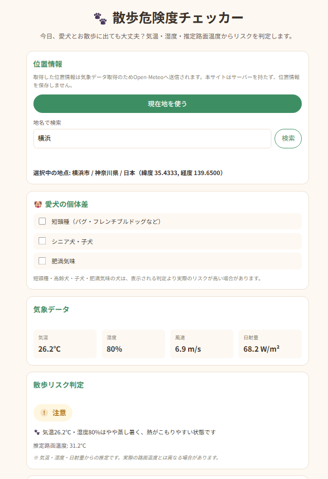

その暑さ、愛犬には大きな負担かもしれません
湿度が高いと、体温をうまく下げられない
犬は人のように汗をかいて体を冷やすことができません。ハアハアという呼吸(パンティング)で体温を逃がしているため、湿度が高い日は、その呼吸による体温調節がうまく働きにくくなると言われています。気温だけでなく、湿度もあわせてチェックしてあげることが大切です。
地面に近い分、照り返しの影響を受けやすい
犬は私たちよりずっと地面に近い場所を歩いています。そのため、アスファルトなどからの照り返しや地面の熱を、人よりも受けやすいと言われています。「今日はそこまで暑くない」と人が感じる日でも、犬の足元は、もっと暑くなっているかもしれません。
犬は、つらくても我慢してしまいます
犬は言葉で「暑い」「つらい」と伝えることができません。多少無理をしていても、飼い主さんと一緒にいたい一心で、そのまま歩き続けてしまうことがあります。だからこそ、愛犬が我慢する前に、飼い主さんの方から「今日は大丈夫かな?」と確かめてあげたいですね。
今日、散歩に出て大丈夫かが、ひと目でわかります
難しい入力は必要ありません。今いる場所の気温・湿度・日ざしから、散歩の危険度をすぐに確認できます。
- 開く ― 「散歩危険度チェッカー」を開きます
- 位置情報を許可する ― 今いる場所の空の状態を取得します
- 結果を見る ― 今日の散歩の危険度がすぐに表示されます

実際の画面です